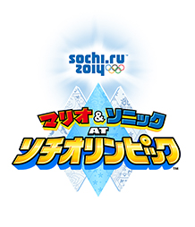
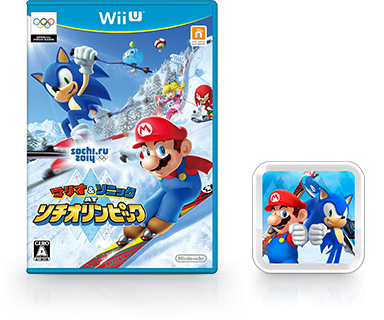

2013.12.5 発売 希望小売価格 5,700 円（税別）
ダウンロード版の購入方法 ：
DLカード DL番号
DL番号 ニンテンドーeショップ
ニンテンドーeショップ
ダウンロード版を保存するのに必要な空き容量は9.6GB以上です。
※本体のダウンロード領域に十分な空き容量が必要です。空き容量が不足している場合はUSB記録メディアをご利用ください。
- 1〜4人
（通信プレイ時 2〜4人） - 18MB以上
- サラウンド（リニアPCM）対応
- スポーツ
- 1 ※ユーザーごとに作成できます。
- 1080p
※テレビへの出力はWii Uメニューの
「本体設定」で選択できます。
※描画解像度は、720p相当です。
- 1人プレイ
- ○（必須）
- ○ (必須・最大1個)
- ○
- ー
- ー
- 2〜4人プレイ
- ○（必須）
- ○ (必須・最大4個)
- ○
- ー
- ー
非対応
※Wiiリモコンプラスを使用する場合は、センサーバーが必要です。
※Wiiリモコンプラスとヌンチャクを組み合わせて遊ぶこともできます。
- Miiverseによるプレイ状況の共有
- 対戦プレイ（4競技のみ）
- ランキングの交換